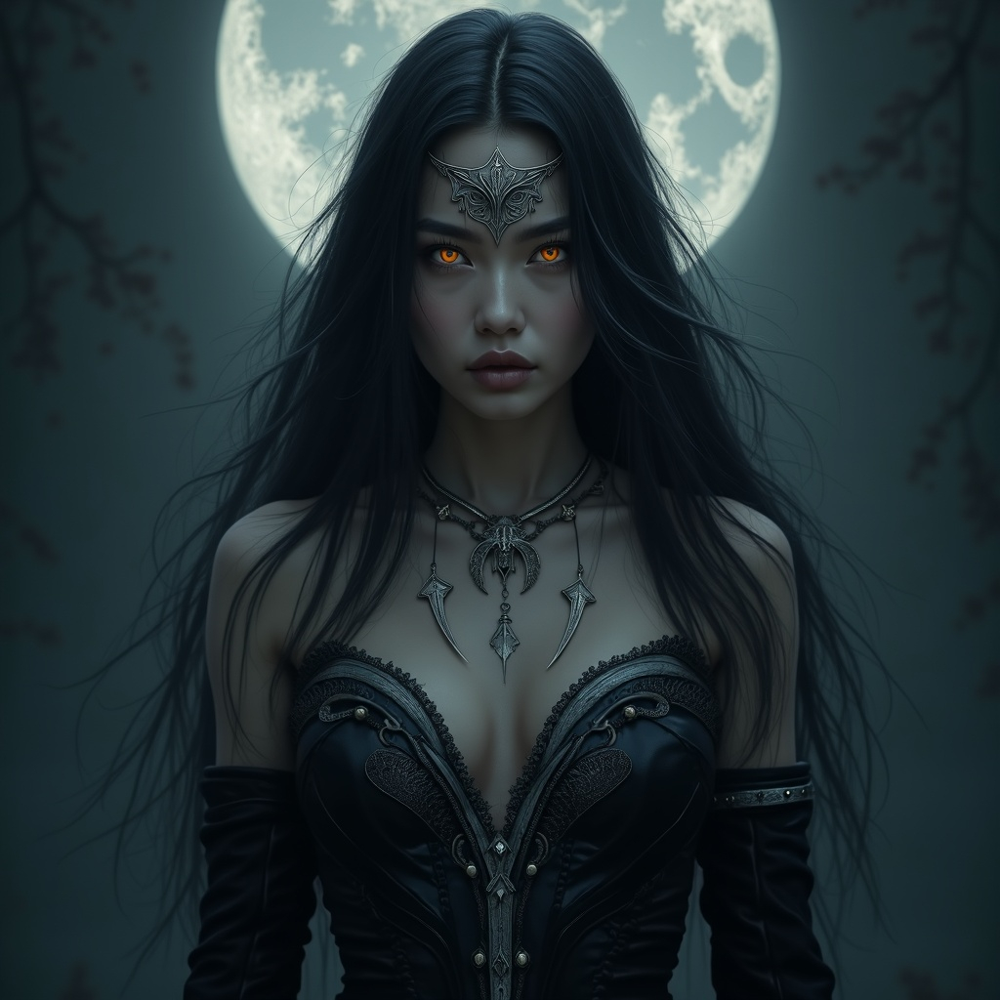

Symbols
- The Twin-faced mask: One face serene, one snarling, representing her duplicity and her ever-shifting nature.
- The Broken arrow: A hunter’s weapon snapped in two, a symbol of both pursuit and betrayal.
- The Serpent in wolf's hide: A snake coiled within the outline of a wolf, symbolizing deception hidden beneath power.

Lunica was said to be a huntress who thrived not by strength, but by cunning. Some stories claim she betrayed her hunting band, shifting her form into wolf, crow, and shadow to escape their vengeance. Others whisper she discovered the “true names” of beasts and men, allowing her to wear their flesh like a cloak. When she betrayed her final kin—her own brother Mani—Kronos or another cosmic power marked her with divine wrath, but instead of punishment, the mantle of divinity clung to her treachery. Now she hunts across worlds, ever-changing, ever-hungry, locked in endless war with Mani, who curses what she consumes and protects those she would betray.